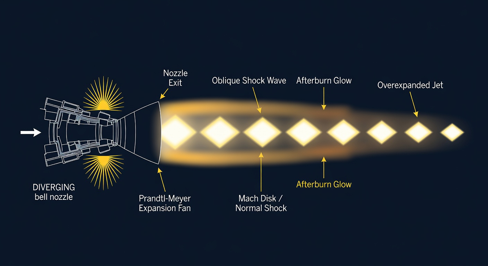
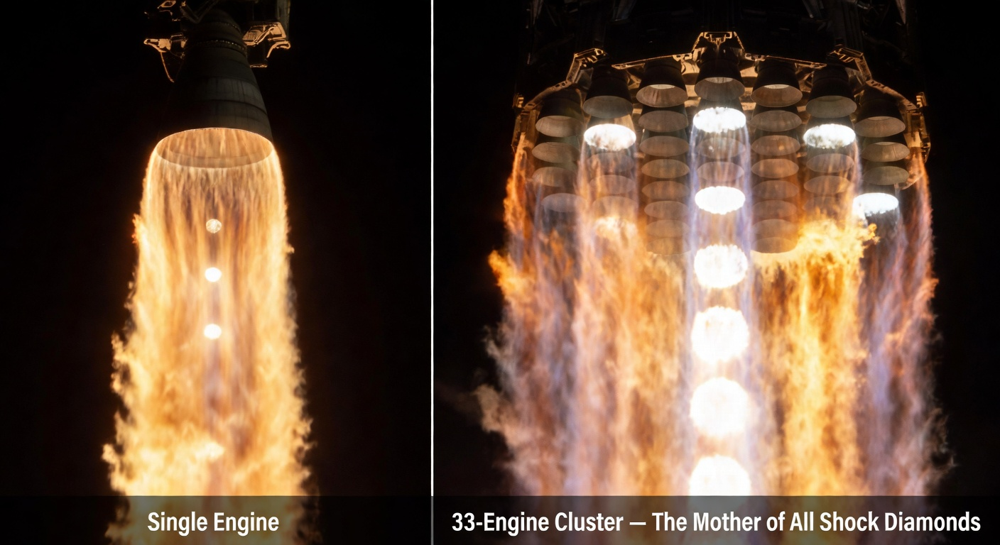
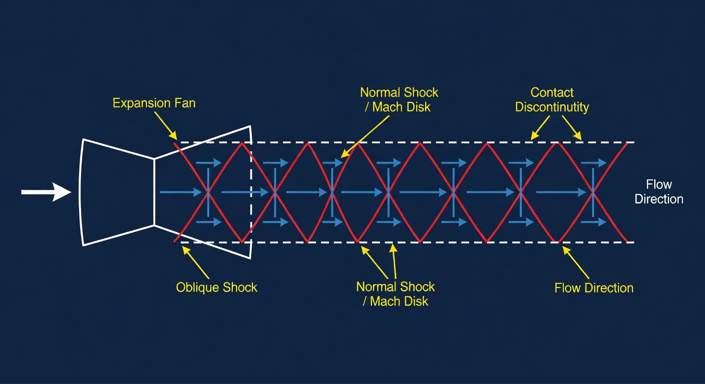
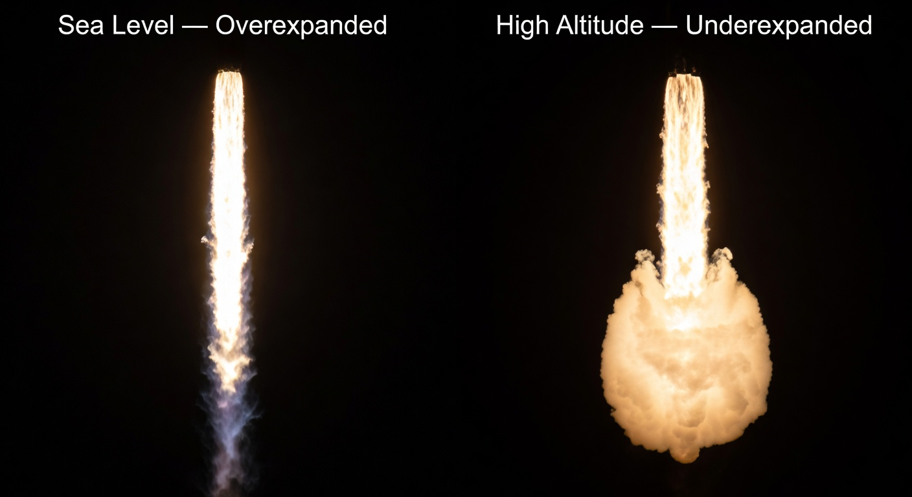

An interactive exploration of the supersonic physics behind the dramatic Mach diamonds seen during SpaceX Starship launches.
During several Starship Integrated Flight Tests, cameras captured dramatic, glowing diamond-shaped structures in the exhaust plume of the Super Heavy booster. These are not artifacts — they are real, physical shock diamonds (also called Mach diamonds or thrust diamonds).
The 33 Raptor engines, operating at sea level, produce a massively overexpanded supersonic jet. Ambient atmospheric pressure is higher than the exhaust pressure at the nozzle exit, causing the plume to be repeatedly compressed by oblique shock waves and expanded by Prandtl-Meyer fans.
At liftoff, the Raptor sea-level nozzles are designed for higher altitudes. At sea level the ambient pressure is too high, so the exhaust is overexpanded. The jet contracts after leaving the nozzle.

The Super Heavy booster’s 33 Raptor engines fire together, creating an effective “mega-nozzle” whose combined exhaust diameter and mass flow dwarf any previous vehicle. The result is the largest, most clearly defined shock diamond structure ever captured on a launch.


